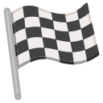

O corpo de Phase é completamente feito de Neter, permitindo que ele deforme, modele e mova seu corpo da maneira que desejar, e o torna quase completamente imune a todas as formas de ambos(danos físicos e mágicos). No entanto, se o próprio atacar um alvo, ele deve permanecer tangível, deixando-o suscetível a contra-ataques. Após a liberação do selo, apenas estar perto de Bloodman incita a morte, já que a grande quantidade de neter oprime e mata aqueles que as inalam.
Passiva
Depois de liberar o Primeiro Selo, torna-se capaz de liberar o segundo, que convoca um mar de caveiras que rouba a vida daqueles que são pegos nele. O Segundo Selo pode ser dissipado com magia de elemento "positivo".
Vida drenada:5% do Hp por turno.
Passiva
Torna seu corpo completamente feito de neter.
Efeito:+50% de mana.
Passiva
Reside completamente no uso de explosões, que podem ser acionadas remotamente ou por contato direto. O usuário também pode criar bombas de mana em um formato desejado. Além disso, qualquer contato que fizerem em você pode fazer com que quem o tocou exploda. Ademais, possui a capacidade de transformar o que deseja em bomba, o próprio corpo do usuário não é excluído disso.
Dano de explosões:100%.
Passiva
Permite ao usuário usar seus braços como se fossem armas brancas reais fortes os suficientes para fazer ataques a distância cortantes.
Todo o ataque desarmado é considerado ataque com "armas leves".
Passiva
O usuário convoca grandes marés de água negra que engolem e inundam uma área tão grande quanto a escolha do usuário; As águas são venenosas devido à abundância de carbono. Se o usuário for derrotado, as águas negras se dispersarão e desaparecerão, ademais quem mergulhar terá a impresão da água ter uma profundidade infinita.
Dano de veneno igual 50% do dano de "canalizador" por turno até o fim da batalha.
Passiva
Permite ao usuário produzir o elemento gelo para vários propósitos.
Como outros Slayers, o usuário é capaz de consumir fontes externas de gelo, mesmo aquelas formadas do nada, a fim de reabastecer sua força e aumentar seu poder, além de ter uma tremenda resistência ao elemento gelo. Além disso, o usuário é capaz de controlar um pouco o gelo dos outros.
Dano de gelo igual 100% | CD de congelamento: P.M
Passiva
o usuário é capaz de criar, bem como manipular, espinhos à sua vontade. Além disso, o usuário pode criar uma explosão altamente destrutiva cujo núcleo tem a forma de pétalas de rosa.
Dano físico: 100%| Dano da explosão: 150%.
Passiva
Esta maldição concede ao usuário a capacidade de absorver as almas dos seres vivos, bem como da magia através do toque. Convenientemente, o usuário também é capaz de esticar partes do corpo, como os membros, em proporções longas, podendo até formar pontas de suas costas e braços, o usuário também pode fazer com que outros os absorvam.
Dano do dreno de alma: 25%.
Passiva
O aprimoramento permite que o usuário, como o nome sugere, aprimore o corpo do alvo da maneira que achar melhor. Embora usado principalmente como um meio de aumentar a força de seus alvos (aqueles que não conseguem resistir à Maldição são mortos e transformados em bonecos de papel preto), a Maldição também pode ser usada para aumentar a sensibilidade à dor de alguém; Quando usado sobre si mesmo, o usuário também é capaz de se fortalecer sem limites. Finalmente, além de mero aprimoramento, o aprimoramento também pode retirar coisas do inimigo do usuário, como seus cinco sentidos.
Efeito: aumenta em 25% do dano causado ao alvo afetado(de todas as fontes)
Passiva
Gira em torno do uso de várias calamidades, como tornados, dos quais o usuário é capaz de envolver seu corpo e membros. Além de tornados, o usuário também tem a capacidade de criar terremotos, tempestades de fogo, raios, tempestades e deslizamentos de terra.
Dano: 100%(o elemento depende do disastre)
Passiva
A macro permite que o usuário assuma o controle total de algo, o que é definido como dar uma "ordem". Se eles estão mortos, vivos, ou um objeto inanimado é irrelevante; uma vez que algo está sob o controle do usuário uma vez, ele pode retomar remotamente o controle a qualquer momento. Esta Maldição também pode ser usada para capacitar drasticamente o usuário em um processo que eles chamam de "quebrar seu limite". Parece haver um limite para a Maldição.
Passiva
Este feitiço permite que absorva a alma de uma certa pessoa. Ao estender seus braços e "conectá-los" a tal pessoa, drenando seu poder mágico. Além disso, permite que ele se transforme naquelas almas que já absorveu, através do uso da Revolução.
Passiva
Ao liberar seu poder ainda mais longe do que a Forma Etérea original que eles podem acessar, o usuário é capaz de iniciar uma transformação secundária por meio de uma "liberação do limitador". Duas asas baseadas em inscrições se formam ao redor de seus braços, luzes são liberadas dos olhos, enquanto um olho aparece em cada palma.
Efeito:+20% em todos os seus atributos e maestrias.
Passiva
Utilizando esta forma de Maldição, o usuário é capaz de reviver uma pessoa falecida que pode se comportar como um ser humano vivo normal sob seu controle. O usuário é capaz de reviver várias centenas de cadáveres de uma só vez. No entanto, a desvantagem desta Maldição é que os cadáveres sob o controle do usuário podem permanecer reanimados por um período limitado de tempo, após a derrota do usuário, os cadáveres sob seu controle param de funcionar.
Passiva
Produz uma névoa paralítica escura ao redor do alvo que os envolve, criando um enorme feixe de espíritos das trevas que atinge o céu. As vítimas desta Maldição não estão mais vivas nem mortas, mas são simplesmente apagadas, tornando-se nada por toda a eternidade.
Leva entorno de 3 turnos para ser feito.
Passiva
É capaz de sequestrar a comunicação mental. Além disso, também é capaz de se comunicar telepaticamente.
Passiva
Ao passar a mão, é capaz de fazer uso dessa Maldição , que transforma o Cubo em um monstro gigantesco chamado Plutogrim; Quando Alegria é ativado, o Cubo da fortaleza móvel se transforma em um monstro demoníaco chamado Plutogrim. Durante esse processo, projéteis pegajosos são disparados arbitrariamente por todo o edifício, aderindo a tudo o que tocam, eventualmente se espalhando e inundando toda a fortaleza. Qualquer um pego pela substância permanece em estado suspenso permanentemente, ou até que seja libertado por outra pessoa. Aqueles que são colocados em um estado suspenso não se lembrarão de estar no estado mencionado assim que forem liberados. Apesar dos efeitos sombrios de Alegria, depois de se transformar em Plutogrim, ele libera um rugido ensurdecedor que pode causar danos massivos às áreas circundantes abaixo dele.
Passiva
Cultiva uma flor grande e monstruosa com espinhos e correntes ao redor de seu bulbo, que ele descreve como " a flor da prisão que floresce no submundo " que pode usar sua videira para atacar os oponentes. Também é capaz de conter outros dentro de seu bulbo.
Demora 1 turno para florecer | Dano: 150%
Passiva
Cria uma rosa composta de Curse Power que engole seus arredores próximos em uma explosão destrutiva.
Demora 1 turnos para florecer | Dano: 50% em área.
Passiva
Cria uma enorme esfera giratória de sua mão de onde uma imensa viga de madeira é disparada no alvo.
Dano: 100% da maestria "canalizador" em área como dano físico.
Passiva
É capaz de usar esta forma de magia que permite que ele se funda com magias "constantes",
Passiva
É capaz de aumentar continuamente seu próprio poder, aumentando conforme os segundos passam, sua mana e máxima tem um limite de 50% há mais, em compensação recebe 5% de mana e vida por turno.
Passiva
Prende um alvo no alcance de vários metros em uma orbe transparente e flutuante.
CD:P.M | Dano: 125%
Passiva
Este feitiço permite que assuma a aparência de qualquer alma que ele tenha absorvido, bem como tenha acesso às suas habilidades. A alma cuja forma ele assume pode ser qualquer humano, Espírito Celestial ou tipo de Magia (recebendo os efeitos da Magia neste caso).
Passiva
Ao dizer o nome de uma alma que ele absorveu anteriormente e erguer os braços, Franmalth é capaz de rejeitar aquela alma perdendo também as habilidades que possuía.
Passiva
utiliza a Revolução para assumir a forma do Espírito Celestial, Áries. Wool Magic: É um tipo de magia que permite ao lançador liberar e manipular lã de cor rosa. A lã convocada pode assumir uma forma sólida ou até mesmo gasosa. Principalmente para o combate, ele apenas envolve o oponente em lã confortável, enviando-o para um estado mais relaxado e confortável, distraindo-o temporariamente e permitindo que o lançador vá para uma escala mais ofensiva. A lã pode enredar vários oponentes ao mesmo tempo. Para fins complementares, Wool Magic pode atuar como uma espécie de airbag que pega uma pessoa de uma grande altura, tornando sua queda muito menos dolorosa. Wool Magic é eficaz em qualquer tipo de ambiente, mesmo em coisas como a água.
Passiva
Franmalth utiliza a Revolução para assumir a forma do Espírito Celestial, Touro. Força Aprimorada : Usando a alma de Touro, Franmalth possuiu a força de Touro, sendo capaz de esmurrar Natsu com força no chão depois de enganar o Fire Dragon Slayer com o rosto de Áries.
Efeito: +200% em força.
Passiva
->Chain magic: Esta magia permite ao usuário atirar longas correntes de suas mãos, completas com ganchos nas extremidades. Eles podem ser usados em combate lançando os ganchos através dos inimigos. No entanto, essas correntes são quebráveis.
Cd:P.m em caso de falaha, o inimigo é enraizado. | dano: 10% de dano sombrio.
->Bullet magic: O usuário imita a forma de uma arma com as mãos e cria esferas mágicas no ar ao seu redor, das quais o usuário pode disparar balas mágicas em rápida sucessão. Os usuários avançados desta magia são capazes de realizar o ataque com ambas as mãos simultaneamente, como se estivessem "empunhando duas vezes".
Dano: 50% de dano sombrio
->Amaterasu: É uma mágica em que seus usuários executam diferentes padrões de mão para criar diferentes efeitos. Depois de executar esses mudras , os selos mágicos de Amaterasu aparecem, com cada fórmula tendo uma aparência diferente. Uma vez escritos, os selos desencadeiam explosões letais ao redor e dentro da área alvo. A escala da destruição causada por essas explosões parece estar ligada à quantidade de selos usados no feitiço.
Dano: 25% por turno de dano sombrio.
Passiva
O usuário ganha a habilidade de usar sua Magia de Dragon Slayer aprimorada com raios.
Efeito:+100% em todos os atributos e maestrias por 5 turnos, outrora ao final deve passar em um teste de constituição CD:400, em caso de falha fica "vulneravel", "paralizado","lento" por 2 turnos e perde a próxima ação.
->Sopro do dragão de fogo Relâmpago: Cospe uma rajada de fogo carregado com eletricidade.
Dano:400%+200 de dano elétrico e fogo | CD:P.M em caso de falha o alvo deve rolar 1d20 acima de 10 fica paralizado, abaixo, queimando.
->punho do dragão de fogo relâmpago: O usuário concentra fogo elétrico nos punhos e despeja a energia em forma de socos.
Dano: 500%+200 de dano elétrico e fogo | CD:P.M em caso de falha o alvo deve rolar 1d20 acima de 10 fica paralizado, abaixo, queimando.
->Chama brilhante do dragão de fogo relâmpago: Junta energia nas mãos e as concentra em uma grande esfera arremessavel.
Dano: 950%+450 de dano elétrico e fogo | CD:P.M em caso de falha o alvo deve rolar 1d20 acima de 10 fica paralizado, abaixo, queimando.
Passiva
Quando o oponente está próximo, emite uma grande quantidade de chamas de seu corpo deixando-o sem fôlego. Alternativamente, Tempester pode exalar uma enorme quantidade de chamas que, instantaneamente, cobrem o campo de batalha para queimar o alvo.
Dano: 150% de dano de fogo.
Passiva
Seilah forma círculos de kanji ao redor de sua mão, para os quais um terceiro olho cresce em sua palma aberta. A partir deste ponto, ela é capaz de gerar uma enorme explosão de energia com força destrutiva.
Dano: 250% de dano cinético.
Passiva
Faz seu corpo explodir, transformando-o em uma espessa névoa negra. As partículas dessa névoa podem danificar o Ethernano na atmosfera e podem causar tanto deficiência quanto doenças em Magia.
Passiva
Keyes levanta seu cajado e uma aura negra o envolve. Ele usa a aura para infligir dano massivo de aspecto de escuridão a uma grande escala de inimigos de uma só vez.
Dano: 125% de dano de escuridão.
Passiva
O portão é incapaz de liberar a mana dentro de seu corpo de volta para a atmosfera, embora ela mencione que ele é capaz de absorver uma quantidade incrível e que não causa nenhum dano a seu corpo enquanto ele usa toda a sua mana para aumentar suas habilidades físicas. Por causa disso, ele pode tornar os outros incapazes de usar qualquer Magic ou Spirit Arts enquanto ele está absorvendo mana. Além disso, Reinhard não tem afinidade com magia, tornando-o incapaz de usá-la.
Passiva
Espíritos Inferiores são atraídos por você e tentam curá-lo sempre que ele é ferido, porém, ele mesmo é incapaz de ordenar ou usar esses Espíritos.
Passiva
Um fragmento de "rashomon", em suma, um raio que pode ser direcionado para onde quiser.
Dano: 20% de "dano verdadeiro".
Passiva
Concede os seguintes benefícios:
Estilhaçar:
Sempre que absorver alguém a pessoa sofre um dano proporcional a parte do corpo absorvida (Membros pequenos = 10% do dano, Membros médios = 25%, Membros grandes = 50%).
Suprimento:
Pode presentear habilidades para aqueles que partilham de um nome.
Cadeia alimentar:
A capacidade de adquirir as habilidades de todos que partilham de um nome.
Devorador de almas:
A alma de alguém lhe concede mais poder (para cada classe a mais que voce, ganha 0,25x de aumento no atributo, ex: se voce de classe 2 absorver alguém de classe 4 voce ganha 50% a mais em todos os atributos).
Absorção:
Pode absorver qualquer habilidade lançada nele, podendo ser análisada incluindo bençãos menores.
Predação:
Absorve o alvo em seu corpo.
Análise:
O alvo absorvido é estudado podendo duplicar habilidades e magias, transformando-os em uma espécie de banco de dados, ou produzir o item em massa se tiver os materiais.
Estômago:
Coisas absorvidas ficam em seu interior, como uma dimensão própria.
Mimetismo:
Pode mimetizar a aparência de quem absorveu.
Possessão de objetos:
Pode absorver objetos e adquirir suas propriedades mágicas e físicas.
Forjador arcano:
Pode conceder propriedades mágicas a seus objetos ao marca-lo, objetos marcados podem ser emprestados e não dadas.
Devorador de almas:
Pode absorver instântaneamente qualquer alma desprotegida.
Soul shard:
Pode adquirir habilidades mesmo absorvendo uma parte do corpo.
Requiem de almas:
Pode entender as memórias e pensamentos daqueles absorvidos.
Cataclysmo de almas:
Libera uma enxurrada de almas causando dano proporcional a um dado. O dado jogado pode ser customizado por você, quanto maior for o dado, mais forte (a cada valor a mais ganha 1% de dano a mais, ex: 1d100 equivale a 100% de dano, mas, a cada 100 no dado aumenta o risco em 1) o aumento tem um límite de 1d1500, o dano causado é verdadeiro. O risco é a perda de uma habilidade sua aleatória em caso do dado der um resultado menor do que sua metade.
Passiva
Um fragmento de "haniel" que lhe permite ter algumas das funcionalidades de Haniel, como efeitos mais fracos que o original. Os efeitos possiveis de realizar são:
Transformação:
Pode transformar a sí mesmo ou objetos e outras pessoas, ao fazer isso os afetados não podem voltar a forma original por métodos envolvendo magias.
Passiva
Vida
Mana
ATRIBUTOS
C.A
Esquiva: 40
Bloqueio: 37
Bônus extra: 0
Armadura Extra: 0
Velocidade

Velocidade: 130
Zona: curta
Maestria
Arma longa
Arma curta
Físico
0
91
0
Arma de fogo
Arma arcaica
Lança
0
0
0
Canalizador
Gadanhas
Peculiaridade
51
0
0
Bençãos
Não pode ser acertado por projéteis físicos.
Todo projétil físico acerta o alvo.
Nenhum tipo de mágia usada contra você funciona, benéficas ou prejudiciais.
Seu corpo tem dificuldade de se queimar(80% de Resistência ígnea).
Seu corpo é extremamente resistente ao vento e impactos(imu nidade ondas de choque).
Seu corpo é extremamente resistente a ataques físicos(80% de resistência física).
Parte de ataques hydro são refletidos(80% de resistência hydro).
Parte de ataques de escuridão são nulificados(80% de resistên cia à escuridão)
Parte de ataques de luz são compartilhados para qualquer outro ser no local.(80% de resistência à luz)
Pode se mover a velocidades sobre-humanas, também afetando montarias(+25% de velocidade de movimento).
Pode montar em qualquer coisa.
Ele não pode sofrer emboscadas, e todos os ataques iniciais do Reinhard conectam(imune ao efeito "surpresa", +1 ataque por turno).
O segundo e os ataques em diante não funcionam(imune à especialização "combo").
Ganha poder na chuva(+10% em todos os atributos enquanto está chovendo).
Ganha poder durante a manhã(+10% em todos os atributos enquanto está de manhã).
Entendimento vago do que está na mente de outras pessoas.
Consegue utilizar qualquer ítem que ele possui, excluindo aqueles que precisam de magia.
Continua forte até mesmo sem armas(trata a maestria físico como a maestria "armas leves").
Pode utilizar qualquer arma com Maestria(Trata todas as maestrias com armas como a maestria "armas leves").
Pode andar na água.
Névoas não pioram sua vista.
Pode andar em nuvens.
Relâmpago nunca irá acerta-lo.
Nunca irá misturar açucar com sal.
Não importa de que modo ou que comida ele cozinhe, ela ficará deliciosa.
Maestria completa em todos os métodos de cozinha.
Consegue desenhar e projetar belas roupas que poderiam o tornar rico.
Seus estudantes aprendem rapidamente.
Consegue treinar não apenas seu corpo, como também outras pessoas, a seu potencial máximo.
Imunidade a todos os venenos.
Imunidade a todas as doenças.
Sangrar o torna mais forte(+10% em todos os atributos enquanto está com a condição "sangrando").
Após a morte, ele é presenteado com um "continuar?" uma vez.
Permite que o Reinhard saiba qual proteção divina seus inimigos possuem.
Fica mais forte durante dias ensolarados(+10% em todos os atributos enquanto está sol).
Fica mais forte durante as noites(+10% em todos os atributos enquanto está noite).
Permite ao usuário escolher as roupas mais adequadas para uma determinada pessoa.
Você nunca quebra nada que não queira.
Todo o primeiro argumento que for usado por voce em uma argumentação, para a pessoa que ouviu será irrefutavel, parece ter algum limite...
Tudo tem um preço para se alcançar a glória, deve ser justo, mas não com os outros, mas com quem realmente importa. Fazer algo considerado fora da "justiça do sistema" será impossível. Dito isso, a glória pode ser alcançada de muitas formas e essa benção é recebida e fortificada toda vez que o preço tiver de ser pago, entretanto ela lhe concede os seguintes benefícios:
1° estágio: Concede +5 em todas as maestrias, +100 de vida e mana, +50 como dano verdadeiro em qualquer ataque.
2° estágio: Concede +10 em todas as maestrias, +250 de vida e mana, Pode transformar vida em mana, pode sacrificar vida atual para aumentar o dano de seus ataques (para cada 2 de vida causa 1 de dano verdadeiro extra).
3° estagio: Concde +20 em todas as maestrias, +500 de vida e mana, Pode transformar vida em mana, pode sacrificar vida atual para aumentar o dano de seus ataques (para cada 1 de vida causa 1 de dano verdadeiro extra), toda vez que for atacado deve-se rolar 1d100 (maior que 50 = sucesso) para receber uma ação extra.
4° estagio: Concede +30 em todas as maestrias, +750 de vida e mana, Pode transformar vida em mana, pode sacrificar vida atual para aumentar o dano de seus ataques (para cada 1 de vida causa 1 de dano verdadeiro extra), toda vez que for atacado deve-se rolar 1d100 (maior que 50 = sucesso) para receber um turno extra, sempre que morrer durante uma cena de RP volta a vida.
5° estagio: Concede +50 em todas as maestrias, +1.000 de vida e mana, Pode transformar vida em mana, pode sacrificar vida atual para aumentar o dano de seus ataques (para cada 1 de vida causa 2 de dano verdadeiro extra), toda vez que for atacado deve-se rolar 1d100 (maior que 50 = sucesso) para receber um turno extra, não precisa rolar se for acertado, sempre que morrer durante uma cena de RP volta a vida, recebe 500 cristal coin todo início de mesa, +100 de dano verdadeiro em todos os ataques.
Glorificado: Concede todos os efeitos da anterior, todo o primeiro hit acertado causa 1 efeito maléfico aleatório, todo o ínicio de mesa recebe um efeito benéfico pelo resto da mesa, em um combate nunca será o primeiro alvo se não estiver sozinho, sempre que se encontrar com alguém terá uma chance de conversa, na primeira vez que sua vida reduzir à metade em um combate recebe uma margem de crítico aumentado em 20, +100 de dano verdadeiro em todos os ataques e todo o dano recebido será parcelado, recebendo o dano ao longo de 2 turnos.
Nunca perderá em algo mundano que for feito justamente (sem a trapaça de alguém), exemplo uma partida de uno, exceto o Uno e Às. Sempre que recrutar alguém "importante" ganha 2 em maestria permanentemente. Para cada vida "importante" poupada ganha 200 de vida e mana máxima, e para cada vida "importante" morta ganha 50 de vida e mana máxima. Apartir de sua mente pode ter acesso a toda a informação que deveria sem ter que vasculhar um livro que tenha, ou pesquisar na internet, incluindo o códice. Presente meu para deixar de ser muito parabólico: Ao escolher um aliado favorito receberá os seguintes bônus:
- Às vezes saberá se está mentindo.
- Às vezes saberá se está de alguma forma alterado.
- Às vezes saberá onde está.
- Às vezes saberá o que está fazendo.
- Às vezes saberá seu destino (lugar).
- Às vezes saberá com quem está.
Pode identificar ítens mágicos desconhecidos apenas pelo toque.
Faz com que seja teletransportado para qualquer lugar que deseje apenas sabendo seu nome ofícial, ao custo de um tempo proporcional a distância. Quanto mais longe, mais demorado é para teletransporte ocorrer.
MODIFICAR VIDA
Inventario
Armas
Espada do Dragão Reid {espada}:
Dano: +10% da vida do alvo como dano verdadeiro sempre que for usada.
Dragon's fall: Quando usado emite uma luz extremamente forte que cobre o campo de batalha inteiro e causa dano equivalente à 50% da sua vida atual +25% da vida máxima de cada um dos afetados.
Custo: 80% da mana máxima.
Nenhum
Nenhum
Nenhum
Nenhum
Nenhum
outros
Pingente de âmbar / 1x
Um pingente criado e dado por Chise como prova de afeto e agradecimento. Este âmbar possui uma benção em seu interior na qual ela nunca o revelou...
Canalizador maldito (cetro do milênio) / 1x
O cajado do milênio retirado de uma memória... sua existência? Um mistério. O que se sabe é que teve seu poder perdido, mas foi carregado com o poder de uma bruxa vaidosa e agora se tornou um ítem maldito.
Aura crepitante: Libera a energia de bruxa presa no ítem fazendo com que seja liberado qualquer estado mágico (não prisões mágicas).
Controle sinístro: Pode controlar a mente de pessoas fracas e induzir a mente dos outros à fazer algo. O alvo deve rolar um teste de SAB (CD igual ao P.M do Phase +100), em caso de falha a vítima passa a ver algo com "outros olhos".
Canalizador arcano: Pode Condenssar e concentrar a energia de bruxa em certos pontos.
Chain link charm / 1x
Efeito: Concede a habilidade sequência.
Sequência: sempre que acertar um golpe receberá um contador indicando quantos golpes você causou sem errar ou sofrer dano. Para cada contador você ganha um certo bônus:
2-3 golpes: Roubo de vida igual a 50% do dano.
4-5 golpes: Roubo de vida igual a 100% do dano, além disso 50% do dano é convertido em mana.
6-8 golpes: Igual aos anteriores +50% de dano.
8-10 golpes: igual aos anteriores pode encaixar um habilidade com 100% de chance de acerto, caso não tenha mana atordoa o alvo.
Magnet Charm / 1x
Efeito: Coleta automaticamente moedas em 10m em torno de você.
Nenhum / 0x
Nenhum / 0x
Nenhum / 0x
Nenhum / 0x
Nenhum / 0x
Nenhum / 0x
Inventario
Banco de Skills
De sua sombra emergem lobos distrorcidos por sombras, possuindo diversos olhos e uma forma amedrontadora.
Dano: 100% para lobos pequenos / 300% para lobos grandes
Custa: 100 para lobos pequenos / 200 para lobos grandes
Efeito: pode ter até 5 lobos pequenos, ou 2 lobos grandes
Passiva
Dispara um tiro de energia negativa altamente destrutiva que no impacto explode causando destruição em diferentes planos e dimensões diferentes.
Dano: 500% + 1000% do P.M
Custa: 1500
Efeito: Cancela outros tipos de magias ativas e armadilhas.
Passiva
Faz uma onda congelante que congela tudo ao seu redor, o alvo deve ser bem-sucedido no teste de constituição ou será congelado.
Dano: 50%
Custo: 50
Efeito: Congela à todos no campo de batalha, a C.D é 100% do P.M + 50% da constituição.
Passiva
Dispara estacas ou outros objetos feitos de gelo, que ao contato ou apenas chegar perto, explode, congelando a área em volta.
Dano: 100% de P.M + 50% de INT
Custo: 50
Efeito: No ínicio do turno inimigo, ele deve realizar um teste de Constituição CD (100% do P.M + 50% da constituição).
Passiva
Expande a sua sombra, e cria um campo feito completamente de sombras, faz com que todos os seus adversários tenham dados seus postos em desvantagem.
Passiva
Se “blackout” estiver ativo, ela congela e prende todos que ali estão e em seguida espinhos de gelos atacarão lá dentro, e como final do combo, atira uma estaca de sombras junto ao gelo em seus alvos.
Efeito: Combo 10x (Arremessa estacas que contam para o contador de combo equivalente à 10, deve-se rolar número de dados igual esse valor também).
Dano: 20% vezes número de acertos + 150% de P.M. como dano Hydro
Custo: 250
Passiva
Traz a tona o zero absoluto, congelando tudo incluindo o tempo.
Efeito: Todos devem realizar um teste de CON com C.D igual à P.M + 50% de INT do úsuario, em caso de falha fica "congelado" por 2 turnos, em caso de sucesso fica com "Lentidão" por 2 turnos.
Custo: 500
Passiva
Uma esfera de energia fraca, porém rápida, pode ser lançada duas vezes em um turno.
Dano: 75% de dano cinético.
Custo: 100
Passiva
Dispara um feixe de energia semelhante a um laser apartir de seu corpo.
Dano: 200% de dano cinético.
Custo: 150
Passiva
Cria uma esfera de cero que se funde com sua arma, potencializando seus ataques.
Efeito: 50% de P.M como dano cinético à mais em ataques com sua arma por 2 turnos.
Custo: 50
Passiva
Pode mover, distorcer e sistematizar metais livremente.
Passiva
Cria um enorme canhão metalico energizado com sua mana, e dispara um enorme cero.
Dano: 50% da mana sacrificada como dano cinético.
Custo: mana sacrificada
Passiva
Faz um assopro forte o suficiente para criar um furacão.
Efeito: Empurra o inimigo aumentando a distância necessária para lhe atacar.
Dano: 200% de dano físico.
Custo: 300
Passiva
Realiza um soco com uma potência devastadora capaz de criar um grande furacão com a sua pressão.
Efeito: Empurra o inimigo aumentando a distância necessária para lhe atacar.
Dano: 350% de dano físico.
Custo: 500
Passiva
Manipula os átomos do ar invocando todo o frio para formar uma grande Aurora em suas costas, em seguida dispara um raio de frio em seu alvo através de suas mãos.
Efeito: O alvo deve realizar um teste de CON com C.D igual à P.M + 50% de INT do úsuario, em caso de falha fica "congelado"" por 1 turnos, em caso de sucesso ficará com "Lentidão" por um turno.
Dano: 650% de dano hydro.
Custo: 1000
Passiva
Suas mãos ficam em torno de uma aura negra em formato de foices e com um grande olho, que toma posse de tudo aquilo inanimado que toca que toca.
Efeito: O alvo acertado perde o controle do membro acertado.
Dano: 150% de dano físico.
Custo: 300
Passiva
Dispara um cero com uns detalhes negros.
Efeito: O alvo acertado perde o controle do membro acertado.
Dano: 200% de dano físico.
Custo: 400
Passiva
Quando ele pega a posse do corpo ele também passa parte de sua simbiose, podendo modificar seu cropo
Efeito: Concede modificações físicas no alvo.
Passiva
Ao escolher um alvo em específico começa a atacar em todas as direções e deixando um rastro negro grudento, semelhante a uma teia de aranha.
Efeito: Combo 10x (conta para o contador de combo equivalente à 10, deve-se rolar número de dados igual esse valor também), para cada dado crítico causa 50% de P.M como dano adicional, para cada acerto o alvo deve realizar um teste de FOR com C.D igual a DES + 50% de P.M.
Dano: 30% de dano físico por acerto.
Custo: 300
Passiva
Ao olhar para um objeto torna-o seu, deixando uma marca de sol no objeto possuído e um dos seus olhos torna-se roxo. A quantidade de objetos controlados é limitado e equivalente a um objeto por olho. Se Alvejando um membro do corpo do alvo, ele desliga os nervos do cérebro inimigo de controle sobre o membro, e agora o membro passa a ser controlado por você. Ainda que a habilidade seja por olhar, ainda deve-se rolar um acerto, a habilidade é semelhante ao amaterasu.
Custo: 100
Passiva
Um cero melhorado de coloração azul, é necessário o próprio sangue para realizá-lo.
Dano: 350% de P.M como dano cinético.
Custo: 250
Passiva
Uma técnica de Liberação de Vento que permite ao usuário aumentar a velocidade de algum projétil ou pessoa lançada, ou criar um forte impacto para atacar inimigos.
Dano: 50% de P.M como dano físico.
Custo: 50
Passiva
Prende o alvo no ""chibaku tensei" e em seguida faz um movimento com as duas mãos semelhantes a dentes mordendo com o desgarron.
Dano: 1000% de P.M como dano físico ou cinético.
Custo: 850
Passiva
Um dojutsu ancestral que lhe concede inúmeras habilidades baseadas nos seis caminhos.
Caminho Asura:
Pode criar e usar armas e armaduras mecânizadas do seu corpo, se tornando uma máquina.
Caminho Preta:
Cria uma aura de absorção na qual pode absorver mana em qualquer um dos seus estados.
Caminho Humano:
Concede a habilidade de ler a mente de alvos ao colocar a mão em cima de sua cabeça ou peito, podendo também arrancar sua alma do corpo.
Caminho Naraka:
Concede duas habilidades principais: Interrogatório e restauração. Interrogatório:
Efeito: Com o alvo com sua alma exposta(fora do corpo) e o rei do inferno invocado, se alguma mentira da parte do alvo for contada, o mesmo terá sua alma devorada pelo rei do inferno.
Restauração:
Efeito: Com o custo de 1% de sua vida máxima e 5% da sua mana máxima, traz qualquer um com uma alma inteira de volta a vida sem quaisquer outras penalidades.
Caminho Animal:
Passa a poder invocar qualquer animal da lista abaixo:
Yatagarasu, Quimera Gigante, Camaleão Gigante, Panda Gigante, Touro Gigante, Rinoceronte Gigante, Crustáceo Gigante, Centopeia Gigante.
Caminho Deva:
Passa a ter habilidades com base em controle gravitacional e possuindo as seguintes habilidades: Banshō Ten'in:
Efeito: Puxa o alvo para sua frente, a habilidade tem um alcance grande.
Dano: 20% de P.M como dano cinético.
Custo: 50
Chibaku Tensei: Selo:
Efeito: Puxa tudo e todos para o centro de uma esfera negra, selando todos aqueles presos, para se esquivar deve realizar um teste de CON com C.D igual à P.M +50% de INT, em caso de falha o alvo fica selado, até a destruição do poder ou uma vez por turno pode realizar um novo teste.
Dano: 400% de P.M como dano físico.
Custo: 500.
Chibaku tensei: Ataque:
Efeito: Após o chibaku tensei ser formado você pode joga-lo em seu oponente.
Dano: 850% de P.M como dano físico.
Custo: 300.
Shinra tensei:
Efeito: Empurra tudo a sua volta, pode ser usado tanto para defesa, quanto para ataque, dependendo da área que quer cobrir, de todo modo distância o alvo em uma categoria de zona.
Dano: 200% de P.M como dano físico para cada zona que for o tamanho da habilidade.
Custo: 300 para cada zona que cobrir, +1 turno de cooldown.
Passiva
Arremessa espinhos altamente destrutivos.
Dano: 300% de P.M como dano espiritual.
Custo: 200
Passiva
Cria vários formatos de garras que dispara em seus oponentes.
Dano: 500% de P.M como dano cinético.
Custo: 350
Passiva
Dispara uma esfera de energia feita de energia negativa similiar a uma pequena bijuu dama.
Dano: 150% de P.M como dano verdadeiro.
Custo: 100
Passiva
Essa habilidade consiste em um ataque carregado que faz uma garra espectral enorme para atacar o oponente.
Dano: 200% de P.M como dano verdadeiro.
Custo: 150
Passiva
Olhando para todos os seus oponentes você acaba lhe mostrando a parte do abismo que reside em você.
Efeito: causa desvantagem em todos os dados inimigos pelos proximos 2 turnos, o alvo deve rolar CAR para resistir, a C.D é equivalente a P.M + CAR.
Custo: 5 turnos de cooldown.
Passiva
Expandindo sua sombra cria um foço de almas enorme sob seus oponentes, devem rolar um teste de INT (C.D igual a P.M + 50% de CAR) ou serão possuidos por um espirito e tomarão dano igual ao seu próprio poder magico, 10% desse dano é retirado de sua vida máxima.
Custo: 300
Passiva
Carrega uma esfera grande e maciça de energia negatvia, por fim disparando-a.
Efeito: O alvo deve rolar um teste de INT (C.D igual a P.M + 50% de CAR) ou ficará com a condição de "inibição" por 2 turnos.
Dano: 400% + P.M como dano verdadeiro.
Custo: 350
Passiva
Realiza uma baforada fantasmagórica embutido com seus sentimentos finais, causando tipos de danos e efeitos diferentes, mesmo se errar o alvo sofre 10% de sua vida maxima de dano.
Dano: 400% + P.M + 10% da vida máxima do alvo.
Custo: 350
Efeito: Causa um efeito diferente para cada elemento selecionado. Fogo:o dano agora se torna ígneo, e o alvo fica burn até 10 minutos depois da batalha, o dano de burn durante a luta é 5% da vida máxima por turno e após a luta é 1% da vida máxima por minuto.
Gelo: o dano se torna hydro, o alvo recebe redução de 50 em esquiva e bloqueio e seu bonus de destreza é reduzido pela metade por 2 turnos.
Necrotico: seu fogo agora causa dano de morte, causa metade do dano ao alvo, mas o dano é inteiramente na sua vida máxima.
Sagrado: seu dano agora se torna sagrado, seu ataque agora cura voce com o dobro de dano causado.
Físico: seu fogo acaba fazendo uma grande pressão no corpo de seu adversário, o alvo deve ser bem sucedido no teste de constituição ou ficará stunado por 2 turnos.
Veneno: seu dano agora se torna venenoso, sendo um veneno fantasma, ignora resistencias, o alvo envenenado toma 1 de dano por hora, não pode mais recuperar vida, a não ser por magias, e dano permanece até acharem uma cura.
Elétrico: seu dano agora se torna elétrico, retarda o corpo do usuario, da desvantagem em seus dados por 5 turnos, o alvo deve realizar um teste de constituição, caso falhe ficará paralizado por 1 turno.
Cinético: seu dano é envolvido por nether, o alvo tem seu poder magico reduzido em 1d50% e perde a capacidade de usar qulaquer habilidade de fuga, seja para outro plano ou tp, também bloqueia regen de mana, tudo por 1d5 turnos.
Passiva
Perfura uma superfície próxima e emito minha aura criando um portal no chão e próximo ao alvo e posso bater muitas vezes e, assim, desencadear vários golpes através do portal. Posso criar até 4 portais.
Dano: 100% da maestria como dano físico por portal.
Custo: 100 por portal.
Passiva
Cria até quatro massas de energia amaldiçoada flamejante para atacar separadamente à distância ou todos juntos para um ataque mais poderoso reduzindo o alcance.
Dano: 50% de P.M como dano ígneo por esfera | 250% de P.M como dano ígneo.
Custo: 20 por esfera | 150.
Passiva
Quando ativada transforma dados ruins em bons.
Custo: 700
Passiva
O ambiente da Expansão de Domínio assume a forma de um santuário budista que foi desfigurado. O santuário tem chifres no telhado, crânios pendurados em cada um dos cantos do telhado, bocas saindo de cada lado dele e é cercado por crânios em forma de touro.
Dano: 50% de P.M por turno como dano verdadeiro.
Custo: 300 de ativação + 50 por turno.
Passiva
Cria uma estaca a partir dos olhos.
Dano: 150% como dano astral.
Custo: 80
Passiva
Dispara laser dos dedos ou dos olhos.
Dano: 100% como dano astral.
Custo: 40
Passiva
Garras surgem e puxam as entidades que estiverem em seu caminho para mim.
Custo: 25.
Dano: 150%
Ativa
Pode disparar a até 10 metros intangível, e ao atravessar entidades torna os outros amaldiçoados.
Custo: 25.
Efeito: 50% de chance de causar “Amaldiçoado”, faço elas terem desvantagens em tudo por 2 turnos.
Ativa
Ao matar um ser no crepúsculo, adiciono seus bônus aos meus durante 10 turnos, e dependendo da camada, meus atributos se aprimoram, exemplo: Camada 1: Meus atributos somam +10% de seus valores originais. Camada 2: Meus atributos somam +20% de seus valores originais, e os dos oponentes subtraem -10%. Camada 3: Meus atributos somam +30% de seus valores originais. Camada 4: Meus atributos somam +40% de seus valores originais. Camada 5: Meus atributos somam +50% de seus valores originais, e os dos oponentes subtraem -20%. Camada 6: Meus atributos somam +60% de seus valores originais. Camada 7: Meus atributos somam +70% de seus valores originais. Camada 8: Meus atributos somam +80% de seus valores originais. Camada 9: Meus atributos somam +90% de seus valores originais. Camada 10: Meus atributos somam +100% de seus valores originais, e os dos oponentes subtraem -25%.
Passiva
Quando recebe dano, no ínicio de seu turno pode ativar a armadura espectral que aumenta 5% da vida máxima como “Armadura Espectral”.
Passiva
Pode convocar 2 corvos para ver, sentir, ouvir e falar por voce.
Passiva
Sempre que o alvo tiver 10% da vida máxima como vida restante, seu próximo dano matará o alvo instantâneamente.
Passiva
Dispara um tigre de energia que explode ao contato.
Dano: 150% de FOR como dano físico +200% de FOR como dano cinético.
Custo: 10% da vida máxima na vida atual.
Ativa
Cria uma lança verde que serve com arma.
Dano: + 50% de P.M em maestria se for usado como arma | 500% de dano como dano cinético.
Custo: 800
Ativa
Cria uma lança verde que pode ser arremessada e possui uma imensa força causando grande explosão no impacto.
Dano: +P.M em maestria se for usada como arma | 1200% de dano como dano cinético.
Custo: 1.500.
Ativa
Faz um efeito de quebra da realidade de forma que o espaço se comporta de meios indeterminados.
Dano: 400% de INT como dano verdadeiro.
Custo: 350
Ativa
Reescreve toda a realidade, criando uma fenda de caos que acaba se expandindo e cobrindo o campo inteiro.
Efeito: Qualquer coisa pode acontecer nesse espaço, todos SEM exceções devem rolar um dado de sorte por turno.
Custo: 1.000
Ativa
Fragiliza a realidade e causando um efeito semelhante a uma quebra em todos no local.
Dano: 250% como dano verdadeiro.
Custo: 200
Ativa
Cria uma onda de energia que por onde se espalha acaba fundindo coisas aleatóriamente.
Efeito: Todos devem rolar um dado de sorte, em caso de falha crítica uma morte ocorre instantâneamente.
Custo: 700
Ativa
Da ponta de seu dedo são disparadas inúmeras chamas negras.
Dano: 300% de P.M como dano ígneo.
Custo: 200
Ativa
Dispara da ponta de seu dedo um raio de energia negro com uma aura avermelhada.
Dano: 600% de P.M como dano cinético.
Custo: 500
Ativa
Dispara um corte na vertical com a energia do cero.
Dano: 250% de P.M como dano cinético.
Custo: 200
Ativa
Cospe uma bola de fogo.
Dano: 150% do P.M como dano ígneo.
Custo: 100
Ativa
Um raio de chamas negras surge abaixo do oponente fazendo surgir um pilar de chamas.
Dano: 500% de P.M como dano ígneo.
Efeito: O alvo deve rolar um teste de CON (C.D igual a P.M + 50% de INT), em caso de falha fica queimando por 7 e 7 noites, recebendo 5% da vida máxima como dano.
Custo: 700
Ativa
Faz chamas negras surgirem no seu campode visão.
Dano: 50% de P.M como dano ígneo.
Efeito: O alvo deve rolar um teste de CON (C.D igual a P.M + 50% de INT), em caso de falha fica queimando por 7 e 7 noites, recebendo 5% da vida máxima como dano.
Custo: 120
Ativa
Prende o alvo em uma ilusão na qual o alvo fica sendo morto por mais de 1.000 anos.
Dano: 400% de P.M como dano psíquico.
Efeito: O alvo deve rolar um teste de CON (C.D igual a P.M + 50% de INT), em caso de falha fica stunado por 1 turno e recebe um stack de medo.
Custo: 400
Ativa
Invoca uma aura de samurai que lhe protege.
Susanoo: Costela
Efeito: +25% do P.M em bloqueio e dano.
Custo: 50 por turno
Susanoo: esqueleto completo
Efeito: +50% do P.M em bloqueio e dano.
Custo: 100 por turno
Susanoo: Armadurado
Efeito: +75% do P.M em bloqueio e dano, além disso todo ataque mágico é refletido.
Custo: 150 por turno
Susanoo: completo
Efeito: P.M em bloqueio e dano, além disso todo ataque mágico é refletido.
Custo: 200 por turno
Susanoo: perfeito
Efeito: + 150% do P.M em bloqueio e dano, além disso todo ataque mágico é refletido.
Custo: 300 por turno
Ativa
Dispara uma esfera de água misturada com o gran rey cero.
Dano: 350% do P.M como dano hydro.
Custo: 300
Ativa
Faz surgir uma enorme torrente de água sobre seus inimigos.
Dano: 450% do P.M como dano hydro.
Custo: 400
Ativa
Envolve sua espada com água e dispara uma torrente de água junto com seu gran rey cero.
Dano: 800% do P.M como dano hydro.
Custo: 700
Ativa
Utilizando 6 pontos de origem, dispara um cero definitivo.
Dano: 500% do P.M como dano cinético.
Custo: 450
Ativa
Com uma varinha em mãos, lança um raio verde que causa a morte em qualquer ser vivo desprotegido.
Efeito: se o alvo possuir controle sobre a mana, um teste de INT deverá ser rolado além do acerto (C.D igual a P.M), em caso de falha recebe todo o dano, em caso de sucesso receberá 10% da vida máxima do usuário como dano cinético.
Dano: 60% da vida máxima do alvo + 40% da sua vida máxima como dano cinético.
Custo: 1.800
Ativa
Carregando uma esfera verde entre suas mãos à sua frente, você dispara apartir dela um enorme feixe de energia.
Custo: 600
Dano: 800% do P.M como dano cinético.
Ativa
Carregando uma esfera de energia à sua frente, arremessa inúmeras esferas de energia vindas dessa original.
Custo: 500.
Dano: 600% do P.M como dano cinético.
Ativa
Colocando suas mãos aos altos, forma uma grande esfera de energia que logo em seguida arremessa causando uma enorme explosão.
Custo: 1.000.
Dano: 1.200% do P.M como dano cinético.
Ativa
Carrega uma pequena esfera de energia em sua mão e arremessa-a para explodi-la cobrindo uma grande área.
Custo: 1.700.
Dano: 1.800% do P.M como dano cinético.
Ativa
Pode criar e controlar setas que se mexem como cobras.
Ativa
Pode transformar o próprio corpo em multiplas cobras.
Ativa
Pode criar e posicionar vetores que dependendo do sentido ajudam ou atrapalham aqueles afetados.
A favor: +25 no acerto.
Contra: O alvo deve se rolar CON o FOR(CD igual à P.M + INT), se falhar o ataque é negado, se passar recebe -20 no acerto.
Custo: 300
Ativa
Pode criar uma espada feita de vetores que empurra tudo que toca.
Dano: +60 em Maestria quando usada.
Contra: O alvo deve se rolar CON o FOR(CD igual à P.M + INT), se falhar o ataque é arremessado uma zona.
Custo: 300
Ativa
Cria um domo de vetores que expulsam sensores como mana, reiatsu, ki... lhe tornando completamente imperceptivel.
Custo: 50
Ativa
Cria vários vetores em torno de sí que giram em um sentido, anulando ataquesl.
Efeito: O alvo deve se rolar CON o FOR(CD igual à P.M + INT), se falhar o ataque é negado, se passar recebe -20 no acerto.
Custo: 1.100
Ativa
Cria vários vetores em torno de um alvo pressionando-o.
Dano: 900% do P.M como dano cinético
Efeito: O alvo deve rolar CON (CD: P.M + INT), em caso de falha o alvo sofre 50% da vida máxima como dano extra.
Custo: 1.100
Ativa
Cria vetores semelhante a cobras que se prendem e pressionam o alvo, essas cobras podem explodir.
Dano de explosão: 400% do P.M como dano cinético.
Efeito: O alvo deve rolar CON (CD: P.M + INT), em caso de falha o alvo ficará imobilizado por 1 turno.
Custo: 800
Ativa
Cria vetores no interior do inimigo fazendo com que o mesmo imploda.
Dano de explosão: Morte (resistencia física nega).
Efeito: O alvo deve rolar CON (CD: P.M + INT), em caso de falha o alvo morre.
Custo: 2.000
Ativa
Usa ondas espirituais para curar um próximo.
Cura: 300% do P.M + 50% de INT.
Custo: 100
Ativa
Usa ondas espirituais para paralisar um próximo.
Efeito: O alvo deve passar em um teste de P.M, em caso de falha o alvo ficará paralisado por 1 turno.
Custo: 100
Ativa
Usa ondas espirituais para emporrar um próximo.
Dano: 100% do P.M.
Custo: 60
Ativa
Usa ondas espirituais em volta dos punhos e a dispara contra o oponente do momento do impacto.
Dano: 400% do P.M como dano espiritual.
Custo: 350
Ativa
Forma um escudo de energia espiritual.
Proteção: 25% da vida máxima (dano cinético nega).
Custo: 200
Ativa
Ao formar uma arma com os dedos, dispara uma poderosa energia da ponta de seu dedo indicador.
Dano: 250% do P.M como dano espiritual.
Custo: 200
Ativa
Ao tocar o inimigo enquanto o mesmo o ataca rouba uma quantidade de mana igual a 1d100 + P.M e causa dano equivalente a essa mana roubada.
Efeito: Você deve ser bem-sucedido em um teste de esquiva e possuir uma diferença igual a 50% da sua destreza.
Ativa
Arremessa espadas feitas de luz sobre seus inimigos. O alvo deve fazer um teste de P.M (Cd igual à P.M do usuário +100), em caso de falha ficará paralisado por 1 turno.
Alcance: curto.
Custo: 300.
ativa
Para cada golpe acertado mesmo bloqueados, voce dobra o peso do seu próximo ataque. Sempre que acertar um ataque físico aumente em 50% o dano do próximo ataque físico, essa habilidade é stackavel.
Vida drenada:5% do Hp por turno.
Passiva
Pode se comunicar através de pensamentos.
Passiva
Pode transferir suas habilidades para outros.
Passiva
Permite você criar quaisquer habilidade que queira a custo de Hp.
Passiva
Pode conceder habilidades criadas para outras pessoas ou coisas.
Passiva
Pode mudar a descrição de uma habilidade.
Passiva
Recebe vida quando: come algo delicioso, Sente prazer sexual, realiza um sonho, ou com satisfação monetária.
Passiva
Pode olhar e analisar outras fichas de pessoas ou avaliar propriedades mágicas de um ítem.
Passiva
Pode avaliar o custos das coisas.
Passiva
Realiza um movimento curto e extremamente rápido (como um teletransporte) na direção de um alvo, além disso sua presença é ignorada durante a viagem.
Passiva
pode criar e controlar raios roxos.(cada nivel de ataque com o cristal causa respectivamente: 75% 200%
600%).
Passiva
Dispara um pedaço de pedra na velocidade de uma bala.
Dano: 150% do P.M
Custa: 40
Passiva
Abre um portal na qual pode ser atravessado de fora, apenas por dentro, dele emergem criaturas aleatórias baseada na quantidade de mana gasta:
Classe 1: 200
Classe 2: 500
Classe 3: 800
Classe 4: 1.000
Classe 5: 5.000
Classe 6: 15.000
Única: 30.000
Passiva
Teletransporta ítens para uma dimensão desconhecida aonde ficam guardadas, quanto mais forte o ítem...mais caro.
Classe 1: 0
Classe 2: 20
Classe 3: 50
Classe 4: 200
Classe 5: 500
Classe 6: 1.000
Única: 5.000
Passiva
Pode comer nether como se fosse mana, mas ainda pode sofrer com as consequências.
Passiva
Carrega uma pequena esfera de energia de luz com capacidades destrutivas.
Dano: 200%
Alcance: curto
Custo: 100
Passiva
Pode converter habilidades em Lp.
Passiva
Pode enxergar mana a olho nú, a percepção de mana é tão eleveda que é capaz de até mesmo diferenciar o tipo de nen de cada um.
Passiva
Pode ler runas simples e entender grande parte de sua simbologia.
Passiva
Nimguém, nem mesmo você, pode ler a sua ficha. (eu posso...hehe).
Passiva
É capaz de criar uma quantia indeterminada de clones que possuem uma consciencia e alma compartilhada, como uma extensão do corpo. em combate pode ser criado em torno de 3 clones.